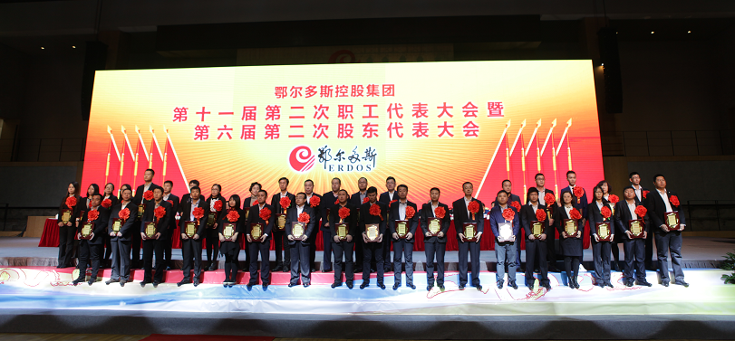
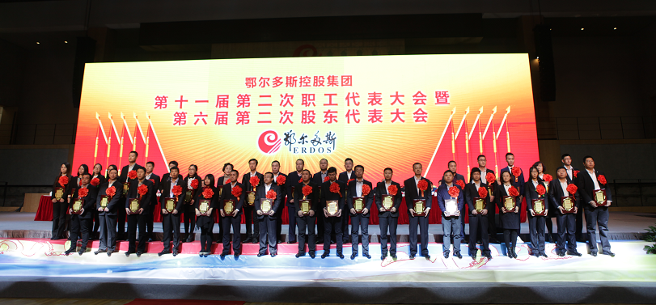

Strikingly awesome Flash templates from TemplateMonster - they really rule!
鄂尔多斯集团隆重召开第十一届二次职代会暨六届二次股代会
2017年2月27日—28日，鄂尔多斯集团第十一届二次职代会暨六届二次股代会在鄂尔多斯现代羊绒产业园隆重召开。
鄂尔多斯市东胜区委常委、区人民政府副区长李芸，鄂尔多斯市工会副主席李雪，东胜区经济科教轻纺工业园区管委会副主任刘斌出席了本次大会。控股集团总裁、执行委员会主席王林祥，控股集团副总裁、执行委员会委员、改发中心总经理、羊绒集团总经理王臻，控股集团副总裁、执行委员会委员、电冶集团总经理张奕龄，控股集团执行委员会委员，控股集团各本部、羊绒集团、电冶集团以及来自各直属企业的正式代表、列席代表、特邀代表及受表彰集体个人1500余人参加了会议。控股集团副总裁王臻主持大会。


控股集团董事局主席、总裁王林祥向大会作了总裁工作报告，对2016年工作进行了简要回顾，明确了2017年的奋斗目标，并对集团转型升级期的战略任务与2017年的关键之战提出了新的要求，为2017年各项工作的推进指明了思路和方向。
2016年，全集团紧紧围绕年度工作主题，坚持用非常手段打非常之仗，全年实现销售收入417亿元，不仅出色完成了年度奋斗目标，而且主要指标好于上年，高于预算，超出预期。
电冶板块整体发力高效运作，经营业绩再创新高，强势支撑起控股集团的经营盘子。电冶集团坚定不移地抓采购、抓营销、抓生产、抓成本，抓住了关键，抓出了实效。煤电事业部精益运营，微电网建设的成功运行再造出了新的低电价优势；冶金、化工两大生产事业部以深化降本增效为主题，以全面预算管理和对标比较管理为抓手，成本控制不断加码，技术指标稳步提升，经营水平跻身于行业第一方阵，释放出强大的竞争力与赢利能力。营销事业部保销量、保价格、保回款，出色完成了以产定销的艰巨任务；电冶集团既有原则性又具灵活性的整体把控与正确决策，加之合理调度与积极协调，成为带动园区产业链满负荷运行的发动机；采购中心精心策划采购策略，精准实施采购行动，一系列“逆市”运作直接创造了可观的效益；物流、水务等服务类企业为园区的生产经营提供了可靠有力的保障。
电冶板块整体发力高效运作，经营业绩再创新高，强势支撑起控股集团的经营盘子。电冶集团坚定不移地抓采购、抓营销、抓生产、抓成本，抓住了关键，抓出了实效。煤电事业部精益运营，微电网建设的成功运行再造出了新的低电价优势；冶金、化工两大生产事业部以深化降本增效为主题，以全面预算管理和对标比较管理为抓手，成本控制不断加码，技术指标稳步提升，经营水平跻身于行业第一方阵，释放出强大的竞争力与赢利能力。营销事业部保销量、保价格、保回款，出色完成了以产定销的艰巨任务；电冶集团既有原则性又具灵活性的整体把控与正确决策，加之合理调度与积极协调，成为带动园区产业链满负荷运行的发动机；采购中心精心策划采购策略，精准实施采购行动，一系列“逆市”运作直接创造了可观的效益；物流、水务等服务类企业为园区的生产经营提供了可靠有力的保障。
羊绒板块蓄势齐发，持续改进提效率，品牌重塑焕新生，振兴升级渐入佳境。羊绒产业振兴升级不断焕发出新的活力，经营能力得到大幅度提升。
绒纺事业部大力推进园区化管理变革与精益化改进，产业链协同运行日趋顺畅高效，生产效益大幅提升，合同履约率和质量控制达到了历史最好水平，所有企业都超额完成预算任务并实现了全线赢利。品牌事业部2016年正式启动品牌升级战略，重塑后的1436、ERDOS、鄂尔多斯1980、BLUE ERDOS四大品牌以精准的定位和独特的风格强势出击，成为中国纺织服装行业整体低迷背景之下的一道亮丽风景。与此同时，渠道建设、供应链优化、运营系统升级有序推进，质量效益实现双提升。
绒纺事业部大力推进园区化管理变革与精益化改进，产业链协同运行日趋顺畅高效，生产效益大幅提升，合同履约率和质量控制达到了历史最好水平，所有企业都超额完成预算任务并实现了全线赢利。品牌事业部2016年正式启动品牌升级战略，重塑后的1436、ERDOS、鄂尔多斯1980、BLUE ERDOS四大品牌以精准的定位和独特的风格强势出击，成为中国纺织服装行业整体低迷背景之下的一道亮丽风景。与此同时，渠道建设、供应链优化、运营系统升级有序推进，质量效益实现双提升。
管理变革释放出巨大的活力与能量，集团化职能管理获得了新突破，有力助推生产经营。随着组织架构再造、业务流程变革和组织盘点的基本完成，经过变革重塑的集团化管理日趋完善成熟，为全集团的生产经营提供了较强的职能支撑和较高质量的专业服务。全面预算管理、资金管理、项目管理、风险管理、人力资源管理和信息化建设都取得了很好的成效，特别是项目审批取得重大突破。
2017年，集团的工作主题是：“全员合力，创新驱动，降本上台阶；全链协作，精益运营，效益再突破”，行动口号是：“做好自己的事，挑战不可能”。
王林祥总裁指出，根据外部环境的巨变和自身发展阶段的要求，集团将战略重点由投资为主的数量型增长转移到了以经营为主的内生性增长，通过对现有产业的深耕细作来提升运营质量和经营效益。
未来集团的战略方向，一是继续做大做强羊绒产业，推进品牌升级；二是继续完善提升棋盘井循环经济产业链，推进产业升级，核心是提质增效。
王林祥总裁指出，根据外部环境的巨变和自身发展阶段的要求，集团将战略重点由投资为主的数量型增长转移到了以经营为主的内生性增长，通过对现有产业的深耕细作来提升运营质量和经营效益。
未来集团的战略方向，一是继续做大做强羊绒产业，推进品牌升级；二是继续完善提升棋盘井循环经济产业链，推进产业升级，核心是提质增效。
为了实现这次大规模、深层次转型升级的愿景目标，王林祥要求全集团工作重点提升六项主要能力，围绕这六大战略任务来展开。
一要多频共振，坚定不移地持续提升低成本+创新核心竞争力；
二要要多极支撑，坚定不移地持续提升经营赢利能力；
三要要多功并做，坚定不移地持续提升行业龙头影响力；
四要要多措并举，坚定不移地持续提升风险管控力；
五要要多点开花，坚定不移地持续提升团队战斗力；
六要要多管齐下，坚定不移地持续提升职工幸福感。
三要要多功并做，坚定不移地持续提升行业龙头影响力；
四要要多措并举，坚定不移地持续提升风险管控力；
五要要多点开花，坚定不移地持续提升团队战斗力；
六要要多管齐下，坚定不移地持续提升职工幸福感。
会议听取了控股集团副总裁王臻所作的企业文化建设及工会工作报告。报告指出，2017年，集团将坚持创新导向、基层导向和“温暖”导向“三个导向”来深入推进集团的企业文化建设。
报告要求2017年各级工会组织要围绕四个“实”字开展年度重点工作：一是基础的工作要夯实；二是重要的举措要落实；三是工作的内容要务实；四是工作的步伐要扎实。
报告要求2017年各级工会组织要围绕四个“实”字开展年度重点工作：一是基础的工作要夯实；二是重要的举措要落实；三是工作的内容要务实；四是工作的步伐要扎实。
会上，控股集团财务总监、财务本部总经理张晓慧做了财务预决算报告，对集团主要经济指标完成情况和集团资金收支情况向大会进行了汇报，并对2017年财务工作进行了计划和安排。
鄂尔多斯市工会副主席李雪代表市总工会对集团职工代表大会的顺利召开表示了热烈的祝贺，对集团2016年取得的不凡业绩给予了充分肯定。她说，2016年，集团工会积极发挥工会组织的桥梁纽带作用，在推动集团发展，促进社会和谐，维护职工合法权益、加大困难职工帮扶、创新企业文化等方面取得了显著的成效，发挥了积极的作用。
李雪要求，2017年集团工会要奋力拼搏，积极进取，进一步提高工会工作的整体水平，为把鄂尔多斯建成祖国北疆亮丽风景线上的璀璨明珠增光添彩。会议还表彰了2016年度先进事业部、达标事业部、优秀总经理以及劳动模范、岗位能手；同时对“必赢之战”和“管理风尚奖”进行了奖励。
李雪要求，2017年集团工会要奋力拼搏，积极进取，进一步提高工会工作的整体水平，为把鄂尔多斯建成祖国北疆亮丽风景线上的璀璨明珠增光添彩。会议还表彰了2016年度先进事业部、达标事业部、优秀总经理以及劳动模范、岗位能手；同时对“必赢之战”和“管理风尚奖”进行了奖励。
新一年的奋斗目标已经确定，向幸福企业出发的号角已经吹响，让我们全体将士振奋精神，齐心协力，做好自己的事，打赢关键的仗，再创2017新辉煌！